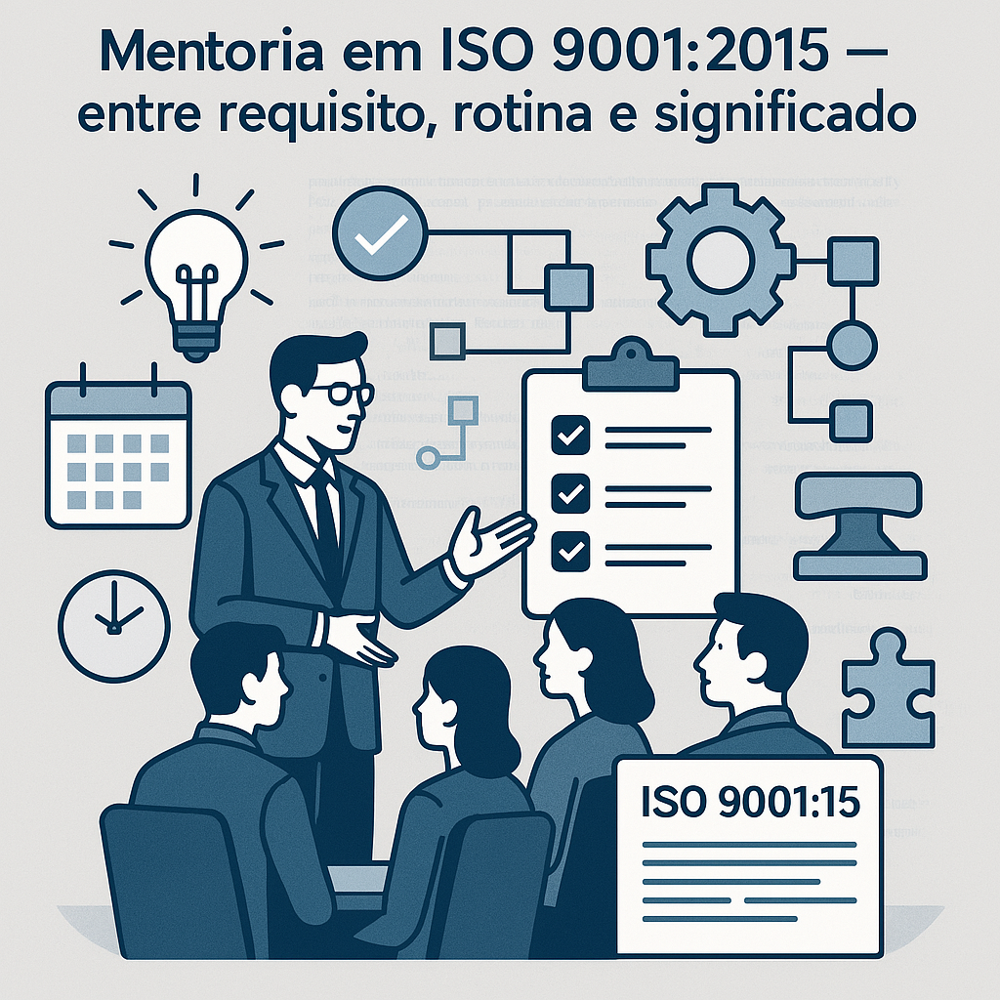

.png)
Mentoria em ISO 9001:2015 — entre requisito, rotina e significado
Publicado em 20/06/2025
| Por Kelly Spinosa
Foi durante uma sessão de mentoria que percebi o que estava realmente acontecendo: eu não estava apenas explicando uma norma — eu estava ajudando alguém a enxergar sentido em algo que, até então, parecia distante e complicado.

A ISO 9001:2015 é uma norma técnica, sim. Mas a forma como ela chega até as pessoas pode (e deve)
ser humana. E foi a partir disso que nasceu a mentoria como venho praticando hoje na Mahalo:
uma construção conjunta, prática e afetiva de entendimento e aplicação do sistema de gestão da
qualidade.
A origem do formato
Tudo começou de forma despretensiosa. Eu queria oferecer algo mais acessível, que fugisse do modelo
tradicional de treinamento, que muitas vezes acaba sendo rápido demais, teórico demais ou impessoal
demais.
O que eu proponho é diferente:
Sentar com o cliente, olhar para a rotina dele, entender os desafios do negócio e, a partir disso,
trazer a ISO 9001:2015 para perto. Requisito por requisito. Sem pressa. Com exemplos reais, que
fazem parte da vida da empresa.
E, no meio desse processo, algo bonito acontece: percebo que não é apenas sobre “ensinar” a norma —
é sobre ajudar pessoas a perderem o medo dela.
Mais escuta, menos fórmula
Quem nos procura na Mahalo geralmente está inseguro, sobrecarregado ou já passou por experiências
anteriores que deixaram mais confusão do que clareza. A mentoria que eu conduzo não é uma cartilha.
Não é um material pré-montado com respostas certas. Ela é uma conversa com método, mas com espaço.
Há espaço para a dúvida.
Para o "não entendi".
Para o "isso aqui não faz sentido pra mim".
E esse espaço importa. Porque é nele que nasce o entendimento verdadeiro. É ali que a pessoa se
apropria do conhecimento — e não apenas cumpre uma exigência.
Mais rotina, menos teoria solta
Um dos pontos mais fortes da mentoria é que ela acontece a partir da realidade do cliente.
Se o requisito é sobre liderança, a pergunta é: como isso se mostra na prática aqui, hoje?
Se é sobre planejamento de mudanças, então: como sua empresa reage a uma mudança urgente?
Se falamos de avaliação de desempenho, como vocês lidam com metas?
É nesse “trazer para dentro” que a norma deixa de ser um conjunto de frases e começa a virar um
sistema vivo, que funciona a favor da organização — e não como algo a ser “cumprido para a
auditoria”.
Aprendizado com leveza
No fundo, tudo isso me mostrou algo importante: ensinar pode ser leve — e aprender também.
Quando se tira o peso do "você precisa saber", e se oferece o "vamos entender juntos", a relação com
o conhecimento muda completamente.
Não se trata de decorar requisito.
Mas de entender intenção, lógica, aplicabilidade.
E essa leveza é o que tem me guiado. E o que faz cada sessão valer a pena.
Um trabalho que me surpreendeu — e me revelou
Honestamente, nem eu sabia que faria esse trabalho com tanto prazer. Que encontraria tanta conexão
com quem aprende. Que veria tantas “fichas caírem” com algo tão técnico.
Me vi, inclusive, deixando de lado a ideia de “treinamento” — que muitas vezes carrega rigidez e
distância — para assumir com mais firmeza o papel de mentora. Alguém que guia, mas também escuta.
Que orienta, mas também aprende. Que ensina, mas principalmente, caminha junto.
Se essa história tocou você, ou se quer conversar para entender como a mentoria pode transformar
a sua relação com a ISO 9001:2015, fique à vontade para entrar em contato com a gente na
Mahalo.
Estamos aqui para ouvir, apoiar e caminhar junto — do jeitinho Mahalo de ser.